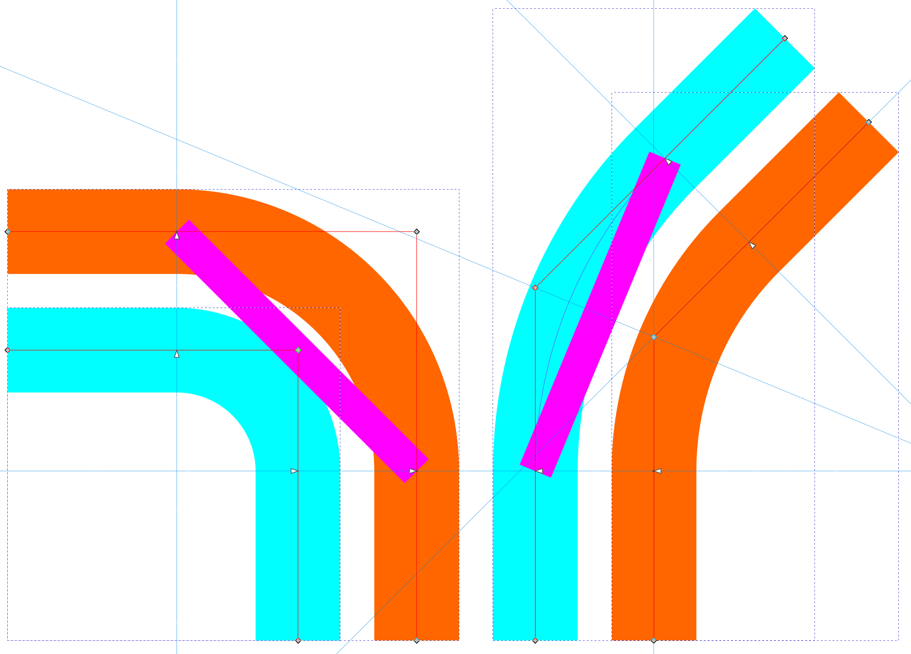

Hot Fudge Sundae style guide, r2
I. Basis
I adopted the visual principles of BKK Budapesti Közlekedési Központ Tram+Rapid rail and Trolleybus network diagrams, which I refer to in shorthand as “178” and “183” respectively iaw their permalinks https://bkk.hu/downloads/map/178 and "/183.
My original approach1 to reverse-engineering it involved simply using the ruler capability of a widespread PDF reader program. This felt unreliable and anyway, for my own personal comfort, I sought rounder numbers than what I was seeing, on . As massaging these singular observations of the width of a given spline into a known standard set of round(er) numbers can in American English be called fudging, I felt inspired to develop a cuter and more memorable name based on the word fudge.
Hence, Hot Fudge Sundae! An ice cream-based treat you’d find at a classic ice cream parlor à l’américaine, it got picked in part for lack of that many other cute things that use the word fudge.
…and maybe in some part I’m letting it keep the memory of too much ice cream for my own good up on the Castle Hill in Budapest. I miss the Ruszwurm and the № 7 already ;(
II. “Weights” and stop dots
“Map 178” has three sizes of spline since at least 2021: the original “heavy” (think heavy rail as in the metro and interurbans) and “light” (think light rail as in the trams) widths and an extra thin (“X-thin”) one for the 100E ✈ Airport Express and 200E bus routes and any metro replacement buses, as appropriate at the time of each map revision.

Figure 1: The three tiers of line, with notation for their “weights” and with examples of their stop dots.
Heavy
Use such 4.2mm “heavy” weight splines to represent railbound rapid transit and interurban/regional rail.
On “178”, this is the size of Metro and HÉV (interurban) lines ①--④ and ⑤--⑨ as well as the dashed MÁV railroad splines.
Stop dots should be 4.2mm across (fill diameter) filled with the route color and stroked (over the fill) 0.7mm thick in background color. If you have a cute logo for your heavy route or routes, why not put it in the stop dot in background (negative) color?
Light
Use such 2.5mm “light” weight splines to represent railbound street transit (“LiGhT rAiL”, trams, cetera) or occasionally bus rapid transit. On “178”, this is the size of tram lines (including the rack railway up the side of Svábhegy and Széchényi-hegy, numbered as surface route 60 ); this is also the weight used on “183” for all of those trackless trolley routes.
I used this tier for some of the San Diego Metropolitan Transit System’s Rapid buses because I used the Heavy weight for the Trolley, the forthcoming Purple Line Metro, and the North County Transit District Coaster and Amtrak Pacific Surfliner. The idea with the Light tier on both “178/183” and on HFS-style maps made by me is therefore to assign Light to the “second class” of transit lines that are still rapid-transit-flavored—that is, something other than unimproved street bus lines or the case described just below.
Stop dots should be 2.5mm across (fill diameter) filled with foreground color (terminus) or background color (intermediate or non-layover loop stop) and stroked (over the fill) 0.4mm thick in foreground color. Having a black stroke over a black fill (in traditional light theme; substitute with white in a dark theme context) may seem like an odd method, but it simplifies production of an intermediate stop dot and terminus dot at the same time: one must only change the fill color.
Extra Thin
Got two tiers of <rail|rapid> transit on your map and still need to squeeze in some buses? Those buses make a particularly important connection that your higher order modes don’t? Run on a highway? Try the new Extra Thin line weight today!~
Further reverse-engineering of “178” after I developed the original standard led me to develop the “X-thin” weight as 1.5mm, or 60% of “Light”. The dots are also identical (but scale them too! and don’t forget the stroke, which goes from 0.4 to 0.24mm) to the “Light” weight’s dots. On “178”, this is the size of the 100E ✈ Airport Express and 200E bus routes. I used this tier for SDMTS Rapid lines 225 , 235 , 280 , 290 , 640 , and 880 .
III. Curves and spaces
Curves are generally circular arcs (no Euler spiral nor other form of easing) and are ruled by chord and parallel spacing, not by successive radii.
Where a single spline changes direction (in 45-degree increments, of course), it will have a chord of 10mm over the arc between the two tangent segments. Where multiple splines curve in parallel (akin to a multitrack railroad curve) and remain parallel on both tangents, the spline of second-tightest curvature will have the 10mm basic chord and lead the rest: their nodes or handles marking the ends of the arc should be abeam those of the leader.2

Figure 2: Several 45- and 90-degree curves placed in parallel and ruled according to the principles above.
The following spacing rules apply to parallel splines, dots abeam a nearby crossing spline, and dots apart from each other. Measure all gaps from the center of a dot or from the center of a path at the appropriate “abeam point”.
| Feature 1 | Feature 2 | Spacing (mm) | |
|---|---|---|---|
| Dot or spline [X-thin] | Dot or spline [X-thin] | 2.50 | |
| Dot or spline [X-thin] | Dot or spline [light] | 3.00 | |
| Dot or spline [X-thin] | Dot or spline [heavy] | 3.80 | |
| Dot or spline [light] | Dot or spline [light] | 3.50 | |
| Dot or spline [light] | Dot or spline [heavy] | 4.35 | |
| Dot or spline [heavy] | Dot or spline [heavy] | 5.20 | |
| Dot near a curve [ANY SIZE] | Tangent/curve transition node | 3.50 |
Notice the pattern? Two half-widths plus one millimeter; all the relationships are defined by the gaps!
There may come times when preserving the spacing rules described above will force new ad-hoc chords for particular curves. Just keep track of them with a “chord rule” (straight piece of Path) if you want to reuse the chord as a spacing rule for [an]other feature(s) nearby. I recommend retaining a carefully named set of chord rules for all those standard lengths as well, and to get very familiar with Guides and the numerical translate feature.
Some techniques for circular curves in Inkscape
As of r1, just kinda look at Figure 2. it uses the Live Path Effect capability that was available post-1.1.
If you're good kids, I'll get some example images put together for the old method with the Bézier curves and subtended arc fractions to handles.
I fairly quickly superseded this method by loading the PDF in Inkscape with the Cairo/Poppler import capability, which let me inspect the thicknesses of splines and also their curve radii, but suffice it to say I did not like what I saw, so I elected to work off the findings of the original approach (keep reading above!). ↩︎
Hint: snap some guides perpendicular to the spline at the leader’s nodes and make sure the followers’ nodes are on those guides (spaced appropriately). ↩︎